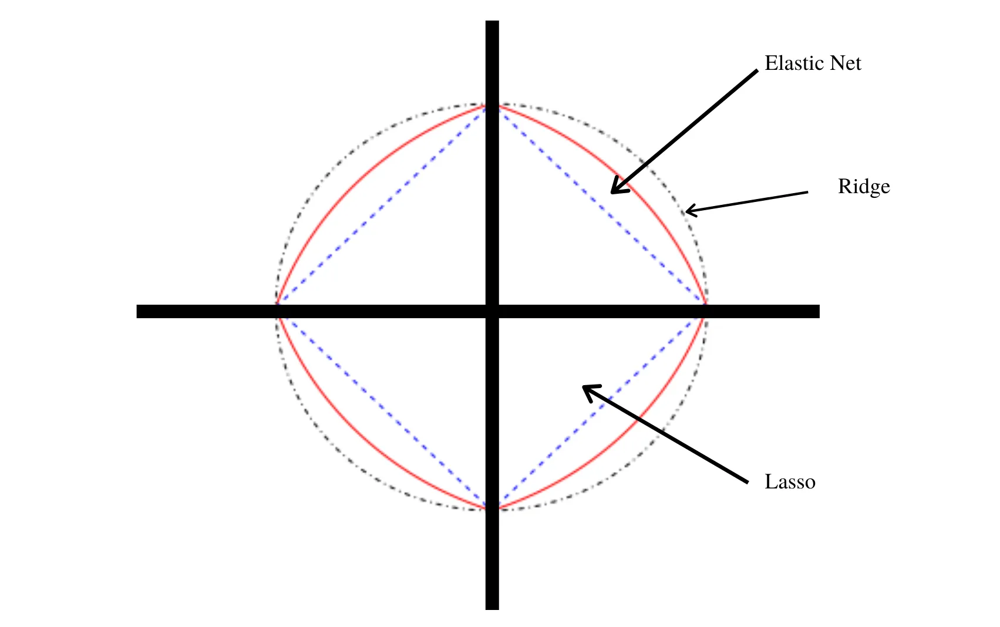

For Prediction:
Three different prediction models were implemented to predict the price of a house based on several factors, including Ridge Regression, LASSO Regression, and Random Forest (RF).
Grid search was used to tune the hyperparameters of each model, and the best set of hyperparameters was used to fit the final model.
For Classification:
Three different classification models were implemented to predict the quality of red wine based on several chemical and physical properties, including Support Vector Machines (SVM), K-Nearest Neighbors (KNN), and Random Forest (RF).
Grid search was used to tune the hyperparameters of each model, and the best set of hyperparameters was used to fit the final model.
The models were evaluated using metrics such as accuracy, classification report, and confusion matrix.
Python
R

The goal of this project was to predict the weight of a banana using its radius and length. To achieve this, 90 bananas were collected and weighed to the nearest gram, and their radius and length were recorded to the nearest millimeter.
Three linear models were created to predict the weight of the bananas based on their physical characteristics. The best model was found to be one that takes both the radius and length as predictors.
The project concludes with a discussion of the results, including the Mean Absolute Error (MAE) and Mean Percentage Absolute Error (MPAE) calculated to evaluate the accuracy of the models. The project also includes a 95% confidence interval created to estimate the density of the bananas used in the models.
R
Collected and organized data on 32 plant leaves, 16 cherry leaves, and 16 pear leaves by measuring their width and length to the nearest millimeter.
Created a linear discriminant analysis (LDA) model and a quadratic discriminant analysis (QDA) model from scratch to classify new leaves based on their physical characteristics of width and length. The LDA model assumes the covariance matrices of both distributions are equal, while the QDA model assumes the covariance matrices are different.
Tested the accuracy of the LDA and QDA models, which were both found to be 84.375%, and used them to classify three new leaves. A geometric interpretation of the models was provided by plotting the classification rule and decision boundary.
R
Created a website for a business club at the University of Calgary.
Designed a custom database in SQL to store all of the websites information.
Used php and SQL to connect the front end of the website to the database.
SQL
PHP

In this project, we discuss different forms of penalized logistic regression.
This includes discussion on Ridge, LASSO and Elastic-Net logistic regression. These models are compared and contrasted to explore their unique advantages and disadvantages.
Then I construced these models in R and analyzed a dataset to classify if someone has diabetes. The results of each of these models were found and compared in order to further demonstrate their differences.
R

The project analyzes data on aftertaste scores for four different types of apples by conducting an analysis of an Incomplete Block Design using, boxplots, and ANOVA.
The ANOVA results reject the null hypothesis of equality of treatment means and find that product 493 is the sweetest. The homogeneity of variance and normality requirements are both found to be satisfied through residual analysis.
The project includes R code for various tasks, such as loading and cleaning data, checking for balance in the design, creating boxplots, conducting ANOVA, and generating residual plots.
R
Analyzed data from an experiment on the effects of vitamin E and copper on weight change in pigs.
They cleaned and transformed the data to extract relevant variables and performed an ANOVA to test the effects of the two factors and their interaction on weight change.
They conducted post-hoc tests using the LSD and Tukey HSD methods to compare means and support their ANOVA results.
R